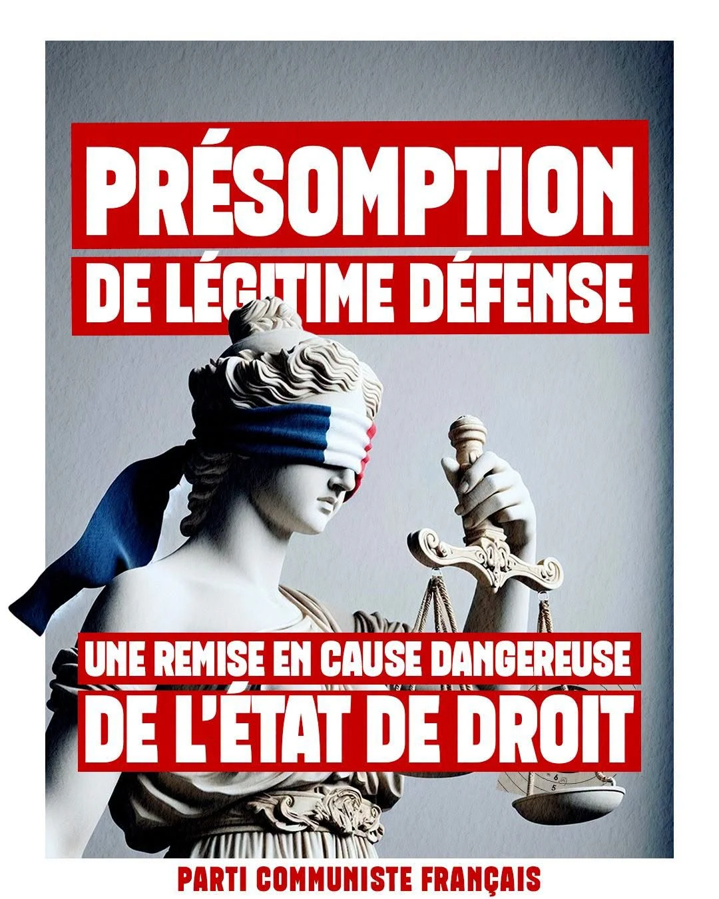

Publication relayée par le PCF 79
Le PCF défend l’État de droit dans le débat sur la légitime défense
Date de mise à jour indiquée par Facebook · 9 juillet 2026
Texte de la publication · PCF national
⚖️ La sécurité ne se construit pas contre l'État de droit.
La présomption de légitime défense pour les forces de l'ordre crée un dangereux régime d'exception et remet en cause des principes fondamentaux de notre justice.
🚩 Les communistes défendent une police républicaine, protégée par des moyens et une formation à la hauteur de ses missions, ainsi qu'une justice indépendante, dotée des moyens nécessaires pour garantir les droits de toutes et tous.
Retrouvez notre communiqué en commentaire.

Sources
PCF national · publication relayée par le PCF 79 · bibliothèque Facebook · AR-0002-FB-00740
À lire aussi · « Permis de tuer, un vote de la honte ! »